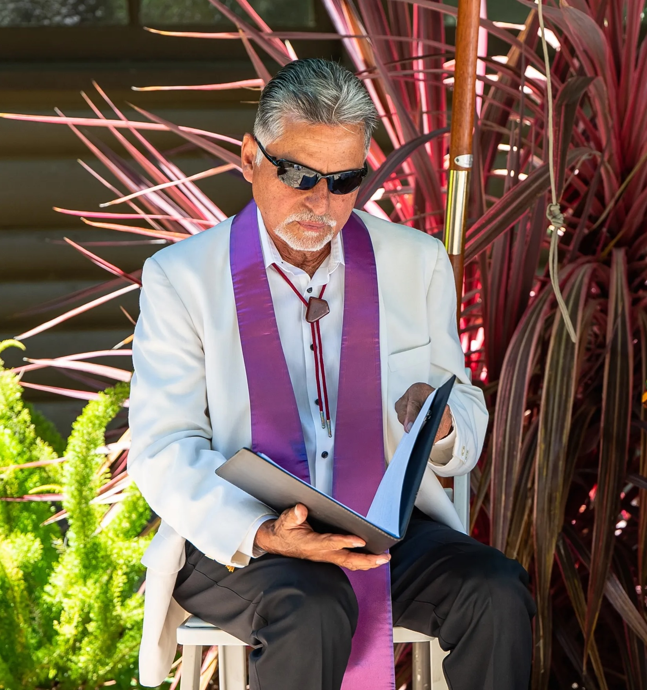

Who is Wm Guillermo Anyway?
“My strong interest and desire is to share my passion for cultivating and sustaining health, joy and well-being in one’s body, home and life.”
L.A. Roots

Wm Guillermo Ortiz was raised in Los Angeles, the second of seven sons, to a Latino working-class family with
roots in northern Mexico. Him and his brothers were expected to contribute to their father’s moving business, and
in this way, his father became his first movement teacher.
Growing up in the 50’s and 60’s, his love of rock 'n' roll and
fascination with the forms of dance began a deepening interest within himself into the realm of physical expression. From 1968 to 1972, during the time of the Vietnam war, he served in the US Navy as a medical and neuro-psychiatric corpsman
which brought him more deeply into the mental health field where he stayed for the next ten years.
It was during this period that he was introduced to
tai chi ch’uan, the Chinese art of health and self-defense. Under the guidance of his teacher Marshall Ho’o, he
began a lifelong practice that continues to this day. These experiences formed the basis for his movement,
healing, and work with trauma.
Moving Forward
In 1984, he was invited by the Institute for Educational Therapy to travel to Italy to be a co-teacher in a
month-long seminar in bodywork, tai chi ch’uan, dance and meditation. From this initial workshop, and
through fostering and maintaining connections within the bodywork/movement community, he began
developing a consistent curriculum for retreats and workshops he taught throughout Europe.
During this time he had the opportunity to meet and study with Buddhist movement teacher Prapto
Suryodharmo, which led him to travel to Java studying & refining his movement skills in a spiritual landscape.
Xochipilli & Men's Work
Moving to the Bay Area, he became involved with the Sons of Orpheus in the mytho-poetic men’s movement. In 1992, along with fellow Chicano artists Juan Domingo, poet/activist Rafael J. Gonzalez, and diversity trainer Roberto Almanzan, they founded Xochipilli, a Latino men’s ritual group. Xochipilli continues to use art, ritual, and performance to address socially relevant issues.

Ministry
At the advent of the Iraqi war, feeling compelled to step up his peace efforts, he commenced a Master of Divinity program with the Seminary for Spiritual Peacemaking, founded by James Twyman. Ordained in 2006, he began offering public and private ceremonies with an emphasis on embodying peace. In addition, he began officiating weddings, coming-of-age ceremonies, conducting last rites, and offering home blessings.
Curanderismo
It was in 2005 that he took on an official apprenticeship with Elena Avila, RN, curandera and author of "Woman Who Glows in the Dark." Elena had been a close friend since 1981 when they met working together at UCLA. It was her committed journey into her Mexican roots that inspired him to go deeper into the practices of curanderismo. He was initiated in November 2010 with a ceremony conducted in Mexico City surrounded by friends and family. He continues to offer his services to his community.
Woven through all his work is a strong desire for excellence, caring for others, and a vision of a peaceful & just world. His love of physical movement allows him to fully engage in his craft, and his passion for healing informs his peace ministry and work in curanderismo.